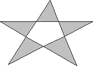

A polygon is a filled shape with straight sides. The sides of a polygon are drawn by using the current pen. When the system fills a polygon, it uses the current brush and the current polygon fill mode. The two fill modes, alternate (the default) and winding, determine whether regions within a complex polygon are filled or left unpainted. An application can select either mode by calling the SetPolyFillMode function. For more information about polygon fill modes, see Regions.
The following illustration shows a polygon drawn by using Polygon.

In addition to drawing a single polygon by using Polygon, an application can draw multiple polygons by using the PolyPolygon function.
Â
Â